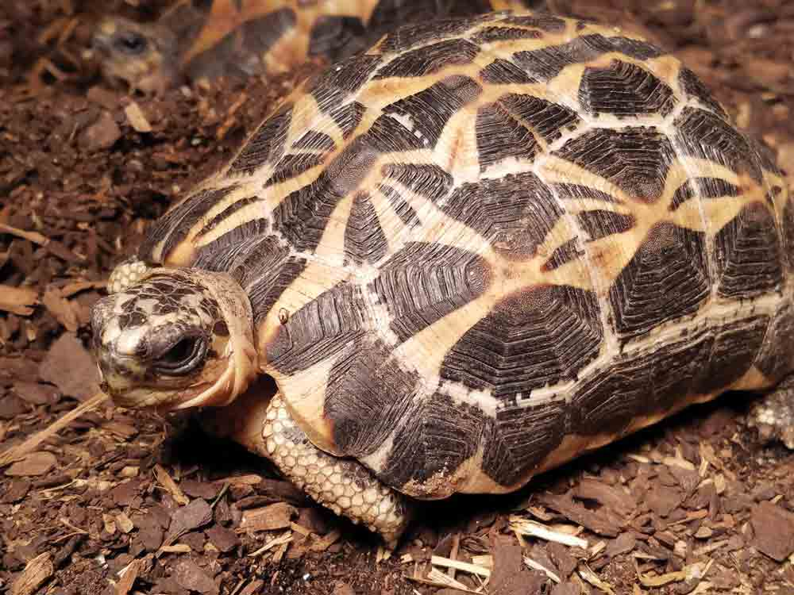
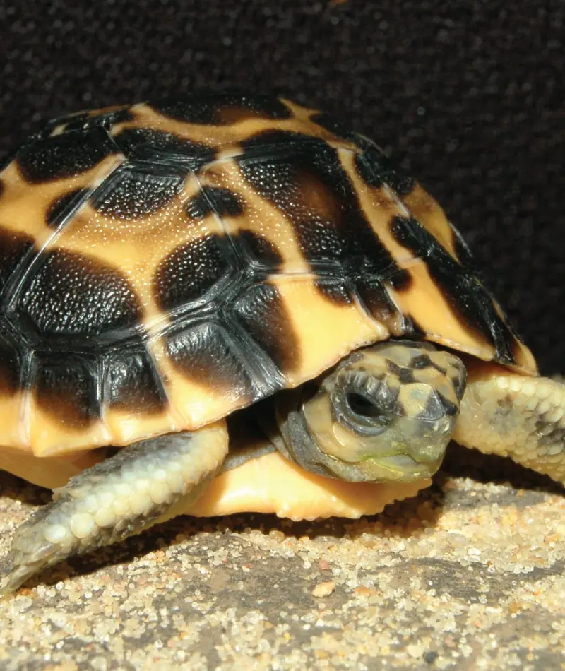
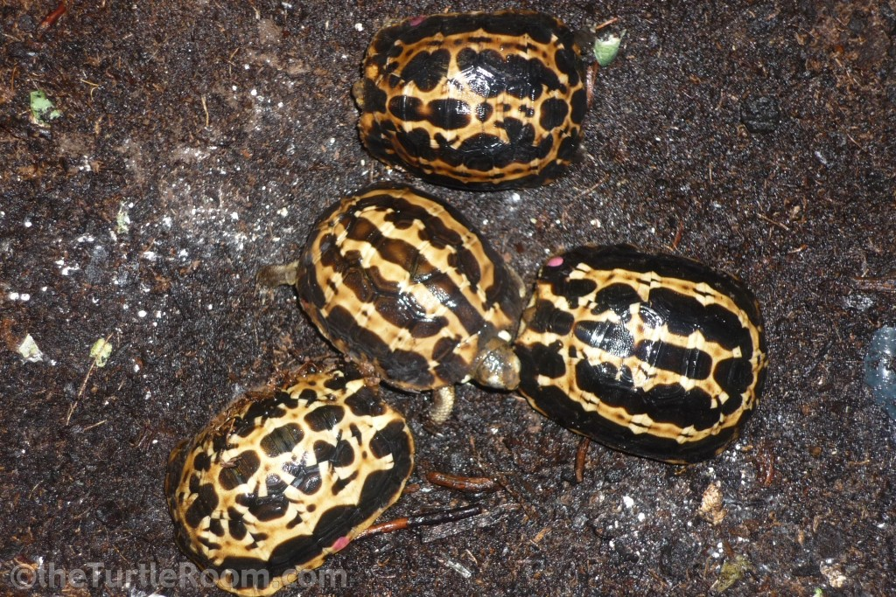
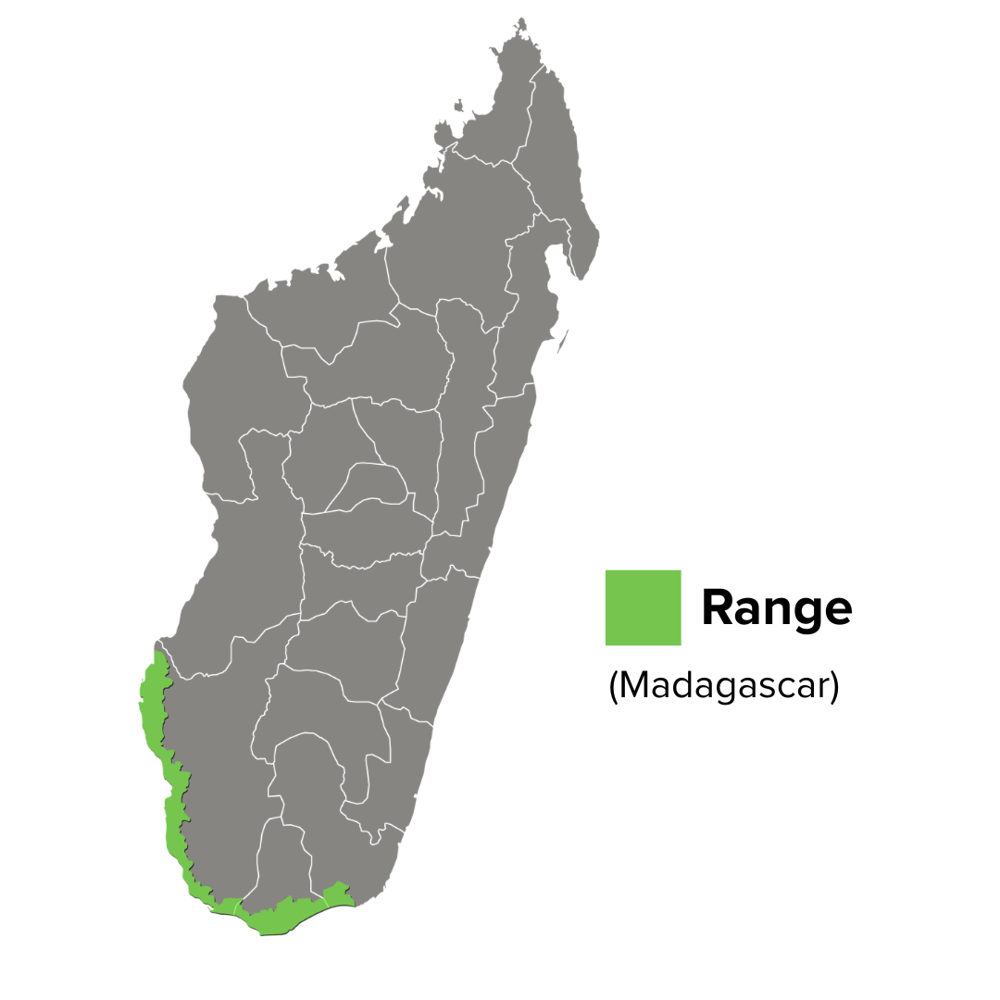

Description
Native to the southwestern coast of Madagascar, these small tortoises weigh between 0.4 and 0.8 pounds. The males reach up to 7 inches in length and females measure less than 5 inches. They feed on grass, young leaves, roots, and insects, showing the highest levels of activity and eating most during the wet season. Once the dry season begins, they conserve energy and moisture by burying themselves deep in the sand through the colder, drier months.
Conservation
Currently listed as Critically Endangered, these tortoises face threats from natural predators including birds, mammals, and local carnivores. Although they can live up to 70 years, their population recovery is slow because they take 10 to 12 years to reach sexual maturity and reproduce by laying only a single egg per clutch.

Behavior
These tortoises are considered crepuscular with most activity in the mornings after sunrise. They are the most active and eat the most in the wet season, between November/April. With the commencement of the dry season in April, most Madagascar spider tortoises bury themselves deep into the sand and aestivate (like a hibernation) for the duration of the colder, drier weather. This saves energy and moisture when food is scarce.

Habitat
Southwestern Coast of Madagascar

Males size up to 7 in, Females are less then 5 in Eats grass, young leaves, roots, and insects Native to southwestern coast of Madagascar Scientific name: Testudinidae LC status: Critically Endangered
Believed lives up to 70 years 0.4-0.8 Ibs Sexual reproduction > eggs Maturity: 10-12 years Predators: Birds, mammalians, and local carnivores Clutch: 1 egg per lay